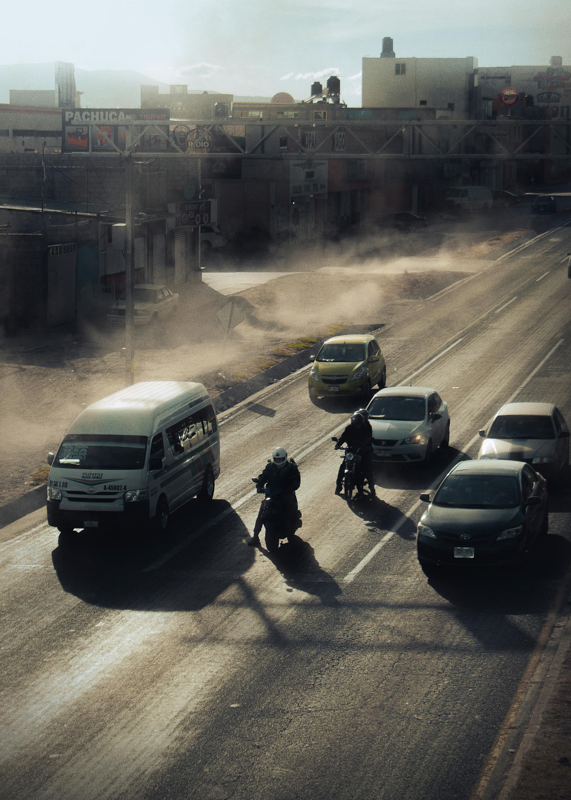
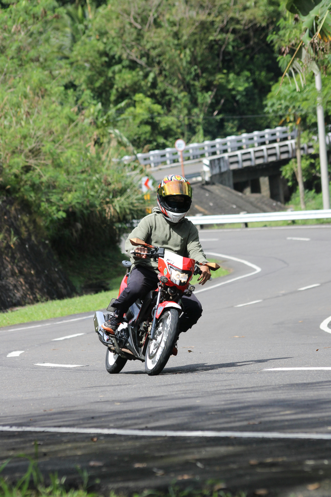

En México la presencia de motocicletas registradas en el parque vehicular aumenta año con año junto con las muertes de
motociclistas que anualmente incrementa alrededor de cien veces a partir del año 2000. Es decir, en el año 2000 fueron
registrados 158 motociclistas fallecidos en carreteras federales y para el 2016 hubo 1, 825; la mitad de los motociclistas
fallecidos tenían entre 25 y 34 años.
Durante el 2020 en carreteras federales, a pesar del confinamiento sanitario; se registraron mil 154 siniestros en los cuales
estuvieron motocicletas involucradas, 72 colisiones más con respecto al 2019.
La media nacional de la participación de la motocicleta en los siniestros —ya sea como responsable o involucrado— es de 6.3%,
los estados con porcentajes superiores al 10% en Sinaloa, Yucatán, Colima y Quintana Roo.

Las motocicletas se encuentran clasificadas en el grupo básico de vehículos para el transporte de personas y pueden
transitar en carreteras federales respetando el Reglamento de Tránsito en Carreteras y Puentes de Jurisdicción Federal que
se mencionan:
- Las motocicletas que circulan por vías federales deben de estar provistas de una lámpara principal de luz blanca e
intensidad variable en la parte delantera, una o dos lámparas más que emitan luz roja y que estén colocadas en la parte
trasera y una luz indicadora de frenaje que emita luz roja o ámbar al aplicar frenos de servicio.
- Contar con un reflejante de color rojo, lámparas direccionales en el frente y en la parte posterior unas que emitan luz
ámbar y que indiquen la intención de dar vuelta o de realizar cualquier otro movimiento lateral mediante la proyección de
luces intermitentes visibles a una distancia no menor a 100 metros.
- Contar con una bocina o claxon cuyo sonido se escuche una distancia de 60 mentros, silenciador de escape en buen estado,
espejos retrovisores y estar provisto de llantas de tipo neumático en condiciones que garanticen la seguridad del
vehículo y proporcionen adecuada adherencia sobre el pavimento aun cuando se encuentre mojado.
- Las llantas no pueden tener en sus costados ningún material que no sea caucho y que sobresalga de la huella de la superficie de tracción.
- Para las personas que conduzcan motocicletas queda prohibido hacerlo con una alcoholemia superior a 0.1 miligramos por litro en aire espirado.
- Pueden utilizar el carril de circulación completo mismo que puede ser compartido con otra motocicleta, los demás conductores deben cuidar no invadir la parte del carril que ocupan, en este caso; las motocicletas.
- En la motocicleta pueden viajar solamente el número de personas para que el que existan asientos y transportar únicamente carga cuando no se afecte la estabilidad del vehículo ni la visibilidad de la persona que conduce y de circular en todo momento con las luces encendidas.
- No entablar competencias de velocidad, arrancones o efectuar maniobras que pongan en riesgo la seguridad del tránsito o de otros usuarios de la vía.
- No pueden conducir entre los carriles de tránsito o entre hileras adyacentes de vehículos.
- No deben transitar sobre las banquetas y tener siempre presente que la prioridad de paso en todos los casos la tienen los usuarios vulnerables: niñas y niños, personas adultas mayores, personas con movilidad limitada y ciclistas.
- Deben de atender los límites de velocidad, sobre todo en zonas con alta presencia de usuarios vulnerables, por ejemplo en zonas escolares, zonas habitacionales o en los accesos a zonas comerciales y estacionamientos.

El uso de casco es obligatorio.
Adicional a la reglamentación te recomendamos el uso de equipo de protección:
Casco
Revisa que tu casco cumpla con las regulaciones similares o mayores a la norma oficial mexicana. Úsalo y manténlo siempre abrochado. Verifica el tiempo promedio de vida y reemplazalo cuando tenga una colisión por mínima que ésta haya sido.
Utilizar un casco de seguridad certificado, disminuye el riesgo y severidad de las lesiones en un 72%, disminuye la posibilidad de muerte hasta en un 39% dependiendo de la velocidad del impacto y también disminuye los costos en salud relacionados con este tipo de siniestralidades.
Chaqueta
Protege tu cuerpo con una chaqueta impermeable con el suficiente nivel de absorción y dispersión de energía de impacto. Resistente al corte y a la abrasión, que además te permita maniobrar con libertad y tener buena transpiración.
Guantes
Protege tus manos con guantes acolchados que cuiden dedos y muñecas de una caída, raspadura o golpe, deben cubrir por encima de la muñeca, además de ser cómodos y flexibles.
Botas
Usa botas resistentes que cubran por completo la superficie de tus dedos, pies, tobillos y tibia, es clave al usar tus pies como soporte, resistir un impacto y evitar lesiones.
Pantalón
Usar ropa de protección no es de motociclistas profesionales, unos pantalones largos cómodos y resistentes que permitan sujetar protectores de impacto como rodilleras, con un buen ajuste pero suficientemente anchos para sentirte cómodo puede evitarte lesiones graves.
Materiales reflejantes
Debido a que la motocicleta no posee la misma cantidad de sistemas de luces que un automóvil, es posible que haya ocasiones cuando no seas tan visible, por lo que es recomendable agregar a tu vestimenta elementos reflejantes que te hagan visible.
Lentes plásticos
Las gafas o lentes de plástico te protegen del sol, el viento, la contaminación, la lluvia, piedras pequeñas y el barro. Estas deben tener un sistema de ventilación para que no queden empañados y mejorará tu visión durante el trayecto.